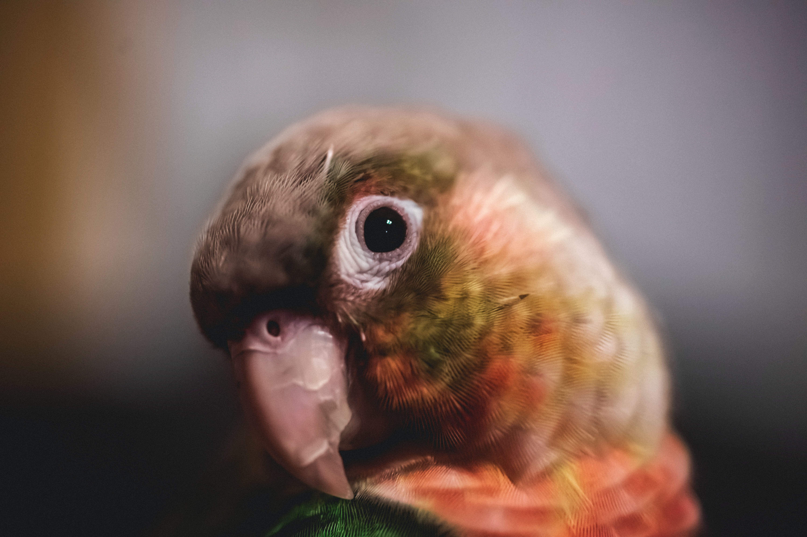

삐요랑 키키는 앵무새다. 개귀여운 미친놈이다. 하루 종일 짹짹거리지만 그래도 귀엽다. 가끔 아랫집에서 올라올까 봐 온 가족이 속을 썩인다. 눈치도 없이 짹짹거리지만 짹짹거리는 소리는 여과 없이 귀엽다. 벽지를 다 뜯어서 콘크리트가 보이기 시작했지만 그럼에도 불구하고 귀엽다. 의자 뒤에 올라와서 하루 종일 똥을 싼다.
바닥에 굳은 똥은 잘 떨어지지 않아서 껌 칼로 긁어낸 뒤 물티슈로 닦아야 한다. 이 작업은 굉장히 귀찮기 때문에 모두가 미루고 하지 않으려고 한다. 그러다 보면 온 집안이 똥으로 가득하고, 앵무새들의 동선에 따라 똥 길이 형성되는데 그 모습이 마치 헨델과 그레텔 같다.
물론 똥을 주워 먹으면서 다니지는 않는다. 입맛은 또 고상하시기 때문이다. 인간들이 먹는 음식보다 좋은 음식을 먹는다. 사료도 두 종류를 구비하여 때마다 다른 사료를 급여한다. 세 시간마다 간식 타임도 있다. 이때는 해바라기 씨를 급여하는데 미친듯이 가루를 날리며 주워 먹는다. 간혹 국수를 배급하면 닭발에 세 가닥을 쥐고 허겁지겁 먹기도 한다. 간식의 양이 모자라면 혈투가 벌어지기 때문에 급여할 때는 늘 유의하여야 한다.